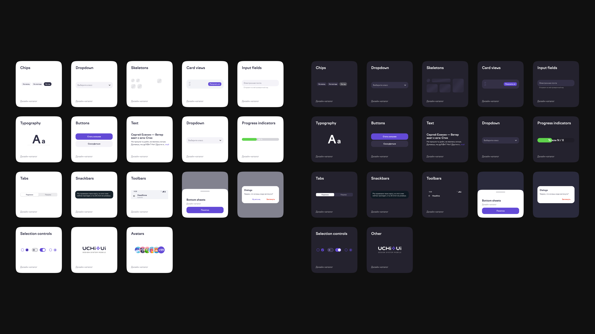
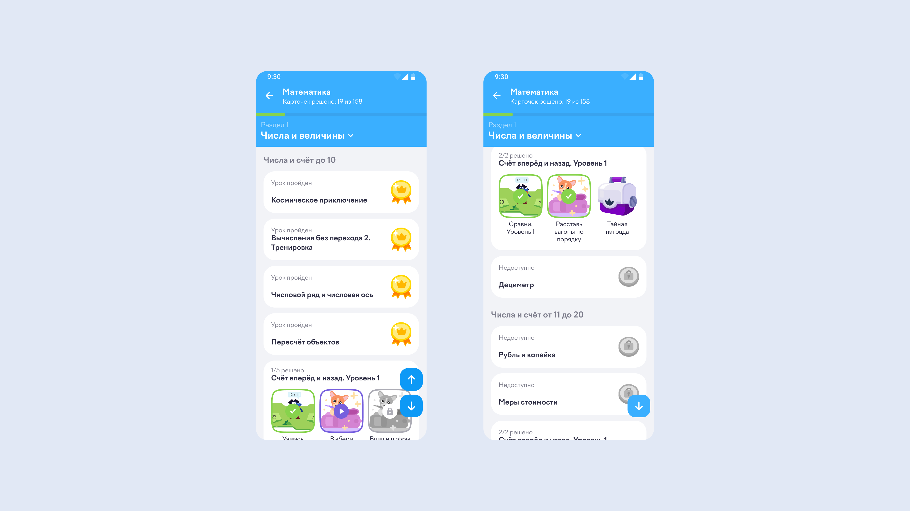
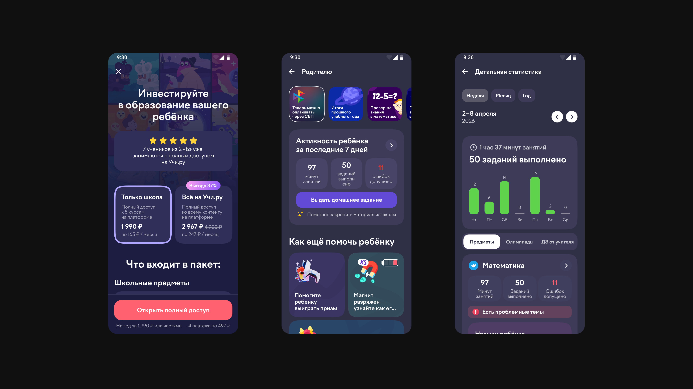
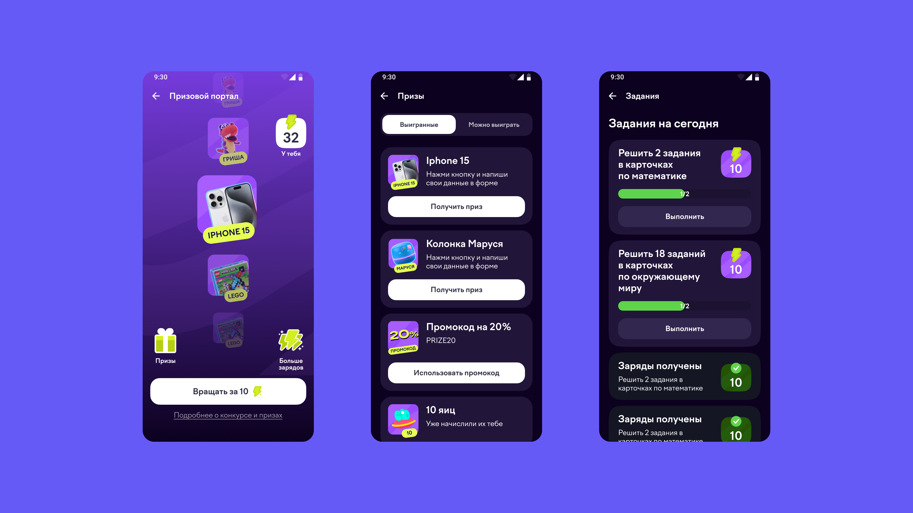
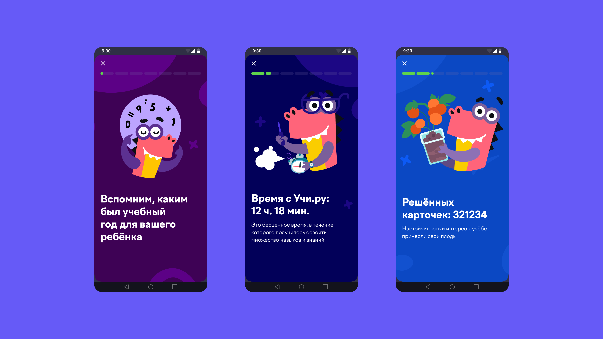

The mobile app had long lagged behind mobile web on key metrics. We needed to build systematic work on the funnel and UX quality to make the app a priority channel.
Designers worked on web and mobile in parallel, but the UI kits existed separately — tokens and components duplicated and drifted apart. So I:

Design system

Mobile app design example: course page

Mobile app design example: parent section

Mobile app design example: in-app giveaway

Mobile app design example: stories